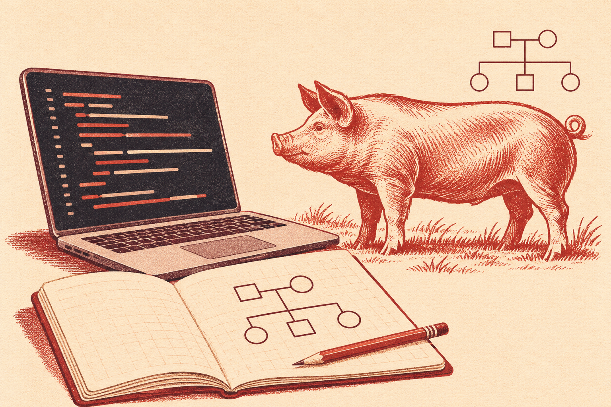

我用做软件的方式学育种 / Learning Animal Breeding the Way I Build Software

前言 / Preface
大家好，我是玩 AI 的杰克。
Hi, I’m Jacky, and I work with AI.
我的老本行是做企业软件和业务自动化，刚接触养殖这个行业时，我把事情想得挺简单。
My background is in enterprise software and automation, and when I first got into the farming industry, I thought it would be fairly straightforward.
当时我想，先把业务流程搞懂，再把数据记清楚，应该就差不多了吧？
I figured that if I understood the workflow and kept good records, I’d be most of the way there.
结果越往里学，越发现要补的课还挺多。
The deeper I got, the more I realized I had to learn.
光是养殖业务，就得弄清楚一条数据是怎么来的、是谁记的、到了哪个环节才用得上。
Just to understand the farming side, I had to learn where a record comes from, who enters it, and when it becomes useful.
到了育种，我先碰到一个看起来很简单的问题，长得最快的猪为什么不一定有最高的估计育种值？
When I got to breeding, I wanted to answer a seemingly simple question about why the fastest-growing pig might have a lower estimated breeding value than another pig.
顺着这个问题往下问，就得弄明白两头猪的记录能不能放在一起比，也得知道模型到底用了哪些信息。
Following that question meant figuring out whether two pigs’ records were comparable and what information the model actually used.
这时候，基础数学和统计学也得捡起来，比如方差在量什么、相关能说明什么、亲缘矩阵里每一行又对应哪头猪。
That sent me back to basic math and statistics to ask what variance measures, what correlation can tell me, and which pig each row of a relationship matrix represents.
计算机这块也有新东西要学，R 对我来说就是一门得补的新语言。
There was more to pick up on the computing side too, and R was a new language for me to learn.
我的办法是拿同一组小数据，先手算一遍，再用熟悉的 Python 和刚学的 R 跑一遍，看看三个结果能不能对上。
My approach is to take one small dataset, work it out by hand, then run it in the Python I know and the R I’m learning to see whether all three results agree.
这份教程是我边学边记攒下来的，想分享给网上也在从头学育种的朋友。
I put this tutorial together from notes I took while learning, and I’d like to share it with people online who are also starting from scratch.
有些地方我自己也还在琢磨，之后学到新的东西，或者发现哪里讲得不对，我会回来补上、改过来。
I’m still working through parts of it, and I’ll keep coming back to add what I learn and correct anything I got wrong.
你要是发现哪儿说得不对，也欢迎提醒我。
If something looks off to you, I’d be glad to hear about it.
我怎么学、怎么核对 / How I Study and Check My Work
我通常先找几条记录，把自己没弄明白的那一步单独拎出来。
I usually start with a handful of records and isolate the step I don’t understand.
比如学样本方差，我就拿四条日增重记录，把每条离均值多远、平方后加起来是多少、最后除以几都写出来。
When learning sample variance, for example, I take four daily-gain records and write out how far each is from the mean, what the squared deviations add up to, and what to divide by.
看育种值表时，我先把性状、单位、遗传基准和准确度放在一起看，再去解读这个数字。
When I read a breeding-value table, I look at the trait, unit, genetic base, and accuracy together before interpreting the number.
到了选配，我就想知道，有了评估结果，做决定之前还要看哪些信息？
When I get to mating, I want to know what else I need to look at before making a decision with the evaluation results.
我从哪里学到这些 / Where I Learned This
这一路我在 YouTube 上翻了不少视频，也找了很多文献和讲义。
Along the way, I watched quite a few videos on YouTube and looked up a lot of papers and lecture notes.
其中有一本《数量遗传学》对我帮助很大，碰到遗传力、亲缘关系这些概念时，这本书给了我一个回头查的地方。
One book, Quantitative Genetics, was especially helpful as a reference for concepts such as heritability and relatedness.
我还参加过好几个 BLUP 软件的培训，边学软件怎么用，边补它背后的统计知识。
I also attended several courses on BLUP software and worked on the statistics behind it as I learned how to use the tools.
能读到原文、方便回去查的资料，我尽量放在对应小节和资料来源里。
Where I could read the original material, I’ve tried to link to it in the relevant section and in Sources.
这一路有很多老师和朋友帮过我，让我在卡住的时候还有地方请教。
A lot of teachers and friends helped me along the way and gave me someone to turn to when I got stuck.
谢谢你们愿意花时间帮我把这些问题一点点弄明白。
Thank you for taking the time to help me make sense of these questions, one at a time.
可以从哪里开始 / Where to Start
第一篇：基础从「看到的表现」开始，走过性状定义、统计、遗传参数和系谱。
Part I: Foundations starts with observed performance and moves through trait definitions, statistics, genetic parameters, and pedigrees.第二篇：遗传评估先读懂估计育种值（EBV），再用微型例子理解最佳线性无偏预测（BLUP）和基因组评估。
Part II: Genetic Evaluation starts with estimated breeding values (EBVs), then uses small examples to explain best linear unbiased prediction (BLUP) and genomic evaluation.第三篇：育种决策把评估、留种、选配和按年算的遗传进展连起来。
Part III: Breeding Decisions connects evaluation, parent selection, mating, and genetic progress per year.两篇附录是中英术语速查和资料来源，适合随时回来查定义和原文。
The two appendices, the bilingual glossary and sources, are available whenever you need a definition or an original reference.
每句中文下面紧跟一句英文，主文串起问题，章下的详读保留推导、代码和来源。
Each Chinese sentence is followed by its English counterpart, with the main chapters connecting the questions and the detailed readings preserving derivations, code, and sources.
怎么看例子和来源 / How to Read the Examples and Sources
教程里的猪只记录、系谱、参数和选配场景都是按各节说明设定的教学例子。
The pig records, pedigrees, parameters, and mating scenarios are teaching examples, with their assumptions stated in each section.
遇到文章或手册中的案例，我会标出资料的对象、年份和可读范围，再交代这里的例子用了哪些条件。
When a case comes from an article or manual, I indicate its subject, date, and what was available, then explain the assumptions of the example here.
把计算搬到实际猪群时，要重新核对数据、性状定义、遗传基准和模型条件。
Before applying these calculations to a real herd, check the data, trait definition, genetic base, and model conditions for that herd.
可以从全书目录挑一个问题，也可以从第 01 章顺着读。
Pick a question from the full contents or read in order from Chapter 01.